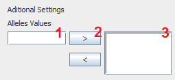

Depending on the type of gene, is shown additional configuration that must be defined before you can add the gene.
For Integers, define the range the gene belongs to. It should be noted that Max> Min and the range must allow more than one element.
As same as the Integers, define the range the gene belongs to. It should be noted that Max> Min. The Max and Min spinner increase in the same manner as that of the integer; to use decimals, you must use point "." to separate the integer part of the decimal part.
For Integers, define the range the gene belongs to. It should be noted that Max> Min and the range must allow more than one element. Also, remember that they only accept individual characters.
Nominal type genes require a more complex configuration. The following figure shows the additional configuration for the nominal type:
Where each number represents the steps to create one of the possible alleles for the Nominal:
Define Name of the allele
Add Allele
Defined Alelles
1. Define Name of the Allele: involves putting a name to the Allele being created, must fulfill that the allele has not a duplicate name to one of the other alleles of the gene being defined.
2. Add Allele: Pressing the button with the symbol ">" (without the quotes), adds the allele to the defined alleles for the gene.
3. Defined Alelles: Displays a list of alleles that have already been defined, This list must contain at least two alleles for the gene to be accepted. Alleles can be eliminated if one is selected and you press the button with the symbol "<" (without the quotes).